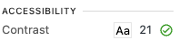
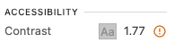

<img src="./info.jpeg" alt="A person using a screen reader to access
a website" class="img" />
Web Content Accessibility Guidelines (WCAG) are a set of guidelines that ensure that websites are accessible to all users, including those with disabilities. The guidelines are divided into four principles: Perceivable, Operable, Understandable, and Robust (POUR).
Information and user interface components must be presentable to users in ways they can perceive. This means that users must be able to perceive the information being presented (it can't be invisible to all of their senses) and that it must be presented in a way that they can perceive it.
User interface components and navigation must be operable. This means that users must be able to operate the interface (the interface cannot require interaction that a user cannot perform) and the interface must be navigable (the interface cannot trap the user in a particular section of the content).
Information and the operation of user interface must be understandable. This means that users must be able to understand the information as well as the operation of the user interface (the content or operation cannot be beyond their understanding).
Content must be robust enough that it can be interpreted reliably by a wide variety of user agents, including assistive technologies. This means that users must be able to access the content as technologies advance (as technologies and user agents evolve, the content should remain accessible).
A level: Basic web accessibility features. This level addresses the most basic web accessibility features.
AA level: Deals with the biggest and most common barriers for disabled users. This level is generally the target for most websites.
AAA level: The highest and most complex level of web accessibility. This level is typically not required for most websites as it is very difficult to achieve.
The contrast between the text color and the background color should be at least 4.5:1 for normal text and 3:1 for large text.
You can easily check the contrast of your website using this contrast checker link.
Or you can use the contrast checker tool in the Chrome browser. Right click on the text and select "Inspect". Then click on the "Contrast ratio" tab.
This is an example of good contrast. The text color is black, and the background color is white.  You can check the contrast of this text using the contrast checker tool or Browser contrast checker.
This is an example of bad contrast. The text color is light gray, and the background color is light gray.  You can check the contrast of this text using the contrast checker tool or Browser contrast checker.
Alternative text is a text description that can be added to an image's HTML tag. This text is read by screen readers to describe the image to visually impaired users. The alt text should be descriptive and provide the same information as the image. If the image is purely decorative, the alt text should be empty.
Example of an image with alt text:
<img src="./info.jpeg" alt="A person using a screen reader to access
a website" class="img" />
Example of an image with empty alt text:

<img src="./decorative.jpeg" alt="" class="img" />
Links should be descriptive and provide information about the destination of the link. Screen readers read out the link text to users, so it should be clear and concise. Avoid using generic text like "click here" or "read more" as it does not provide any context to the user.
Example of a descriptive link:
WCAG Quick Reference
<a href="https://www.w3.org/WAI/WCAG21/quickref/"
class="link">WCAG Quick Reference</a>
Example of a non-descriptive link:
Click here
<a href="https://www.w3.org/WAI/WCAG21/quickref/"
class="link">Click here</a>
Labels are used to describe form elements such as input fields, checkboxes, radio buttons, and select dropdowns. Labels should be associated with their corresponding form elements using the "for" attribute on the label tag. This allows screen readers to read out the label when the form element is focused. Labels should be descriptive and provide context to the user.
Best practices for using labels:
You can use the following HTML to associate a label with a form element:
<label for="name">Name:</label>
<input type="text" id="name" />
You can also wrap the input field inside the label tag to associate them:
<label>Name: <input type="text" /></label>
Example of a label associated with an input field:
<label for="name">Name:</label> <input type="text"
id="name" />
Example of a label associated with a checkbox:
<label for="subscribe">Subscribe to newsletter</label>
<input type="checkbox" id="subscribe" />
Example of a label associated with radio buttons:
<label for="gender-male">Male</label> <input type="radio"
id="gender-male" name="gender" value="male" /> <label
for="gender-female">Female</label> <input type="radio"
id="gender-female" name="gender" value="female" />
Example of a label associated with a select dropdown:
<label for="country">Country:</label> <select
id="country"> <option value="us">United
States</option> <option value="ca">Canada</option>
<option value="uk">United Kingdom</option> </select>
Using semantic HTML elements helps screen readers and other assistive technologies understand the structure of the content. Some common semantic elements include headings, paragraphs, lists, and links. By using these elements appropriately, you can improve the accessibility and user experience of your website.
Here are some examples of semantic HTML elements:
By using these elements, you can create a more accessible and user-friendly website for all users. For example, screen readers can navigate through the content more easily, and users with disabilities can better understand the structure of the page. Additionally, search engines can use semantic HTML to better understand and index your content.
Here is an example of how you can use semantic HTML elements to
structure your content:
<header>
<h1>Web Content Accessibility Guidelines (WCAG)</h1>
</header>
<nav>
<ul>
<li><a href="#color-contrast">Color Contrast</a></li>
<li><a href="#alternative-text">Alternative Text</a></li>
<li><a href="#links">Links</a></li>
<li><a href="#labels">Labels</a></li>
</ul>
</nav>
<main>
<h2>Perceivable:</h2>
<p>Information and user interface components must be presentable to users in ways they can perceive.</p>
</main>
<footer>
<p>Copyright © 2021 Your Company. All rights reserved.</p>
</footer>